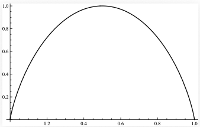

In this chapter we give an introduction to $\textbf{information theory}$, a beautiful theory at the intersection of ergodic theory, probability, statistics, computer science, and branches of engineering and physics.
Throughout the chapter, $X_1,X_2,X_3,\ldots$ will denote a stationary ergodic sequence of random variables taking values in a finite set $A=\{\alpha_1,\ldots,\alpha_d \}$. We think of the sequence as an $\textbf{information source}$, emitting successive symbols from the set $A$, which in this context will be referred to as the $\textbf{alphabet}$. Think of a long text in English or some other language (1) ; a sequence of bits being transmitted from one computer to another over a network; data sampled by a scientific instrument over time, etc.\ --- all of these are examples of information sources which in suitable circumstances are well-modeled by a stationary ergodic sequence over a finite alphabet.
A fundamental problem of information theory is to measure the information content of the source. This is a numerical quantity which has come to be known as $\textbf{entropy}$. We will define it and also try to explain what the number it gives means. E.g., if the entropy of a source is $3.5$, what does that tell us regarding the difficulty of storing or communicating information coming from the source?
Let us start with the simplest case of an i.i.d.\ sequence. Denote $p_k = \mathrm{P}(X_1 = \alpha_k)$. The probability vector $(p_1,\ldots,p_d)$ gives the relative frequencies of occurrence of each of the symbols $\alpha_1,\ldots,\alpha_d$, and for an i.i.d.\ sequence completely characterizes the statistical properties of the sequence, so entropy will simply be a function of the numbers $p_1,\ldots,p_d$. We define it as
with the convention that $0\log 0 = 0$. The logarithm is traditionally taken to base $2$, to reflect the importance of entropy in computer science and engineering, although in certain fields (notably thermodynamics and statistical physics) the natural base is used, and any other base may be used as long as it is used consistently in all formulas. If the base $2$ is used, we say that entropy is measured in units of $\textbf{bits}$. The letter $H$ used for the entropy function is actually a capital Greek eta, the first letter of the Greek word entropia (2) .
Note that entropy can be regarded as the average of the quantity $-\log_2 p_k$ weighted by the probabilities $p_k$. Thus, sometimes we write
where $X$ is a random variable representing a source symbol (i.e., $\mathrm{P}(X=\alpha_k)=p_k$ for each $1\le k\le d$, and $p(\alpha_k)=p_k$ represents the probability of each symbol. (It is a distinctive and somewhat curious feature of information theory that probabilities are often themselves regarded as random variables.)
In the case of a $2$-symbol alphabet ($d=2$), the entropy function is usually written simply as a function of one variable, i.e.,
This function is concave, has the symmetry $H(p)=H(1-p)$, equal to $0$ at $p=0$ and $p=1$, and takes the maximum value $H(1/2)=1$ at $p=1/2$ (see Figure 6).

Gibbs's inequalityIf $(p_1,\ldots,p_d)$ is a probability vector and $(q_1,\ldots,q_d)$ is a sub-probability vector, i.e., we have $p_k,q_k\ge 0$, $\sum_k p_k = 1$ and $\sum q_k \le 1$, then
with equality holding if and only the two vectors are equal.
ProofThe form of the inequality is unchanged by changing the logarithm basis, so we use the natural logarithm. Since $\log x \le x-1$ for all $x>0$, we have
A$\square$
Properties of the entropy functionThe entropy function of $d$-dimensional probability vectors $(p_1,\ldots,p_d)$ satisfies:
$0 \le H(p_1,\ldots,p_d) \le \log_2 d$
$H(p_1,\ldots,p_d)=0$ if and only if $p_k=1$ for some $k$ (and all the other $p_j$'s are 0).
$H(p_1,\ldots,p_d)=\log_2 d$ if and only if $p_k=1/d$ for all $k$.
$H(\mathbf{p}\otimes \mathbf{q}) = H(\mathbf{p}) + H(\mathbf{q})$, where if $\mathbf{p}=(p_1,\ldots,p_d)$ and $\mathbf{q}=(q_1,\ldots,q_\ell)$, we use the notation $\mathbf{p}\otimes\mathbf{q}$ to denote the probability vector $(p_i q_j)_{i,j}$ on the product of two alphabets of sizes $d$ and $\ell$.
$H(p_1,\ldots,p_d)$ is a concave function.
Prove Lemma 8.3.
(1) It may seem unusual to you that language is considered as a statistical source, but spoken and written language does exhibit very clear statistical characteristics. Note that information theory makes no attempt to address the meaning (or usefulness) of a string of text. Thus, the word "information" is used in a slightly different meaning in information theory versus how an ordinary person might use it. For example, a string of random unbiased binary bits might appear to contain very little information to a layperson, but in the information theory sense this kind of string has the highest possible information content for a binary string of given length.
(2) See the Wikipedia article http://en.wikipedia.org/wiki/Historyofentropy#Information_theory for an amusing and often-told story about the origin of the term entropy in information theory.